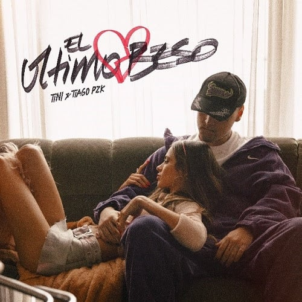
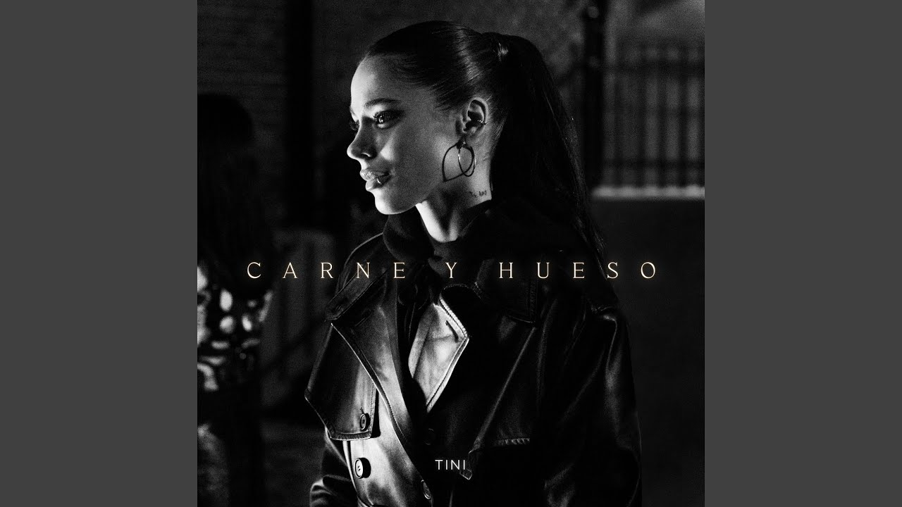
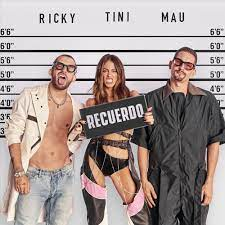
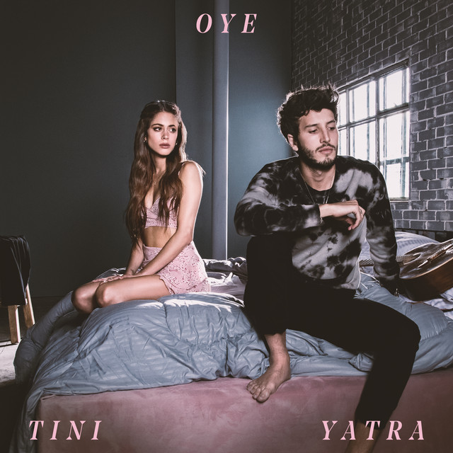
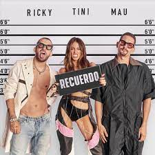
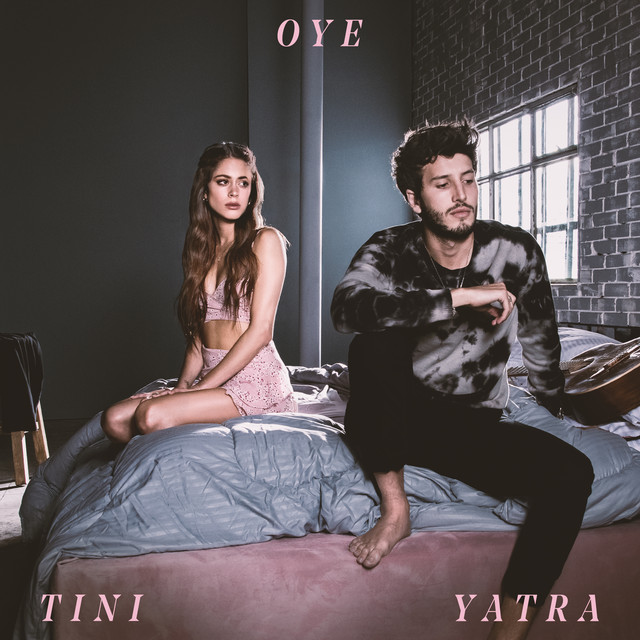
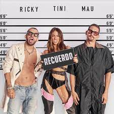
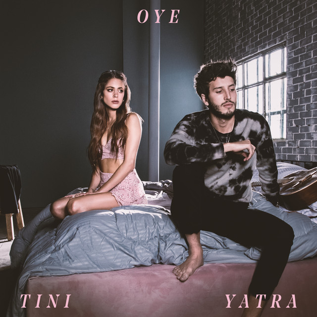

ENTREVISTAS
TEMAS
click en la imagene para que escuhes su musica
 
 


VUELVE A LA PAGINA PRINCIPAL
Martina Stoessel, conocida artísticamente como Tini, es una cantante, actriz y compositora argentina nacida el 21 de marzo de 1997 en Buenos Aires.
Inició su carrera como actriz a los 10 años con un papel menor en la serie infantil argentina "Patito feo", y saltó a la fama mundial por la interpretación de Violetta, el personaje "estrella" de Disney Channel desde el 14 de mayo de 2012. Violetta es una chica adolescente con un talento muy especial para cantar, algo que ella desconoce. Este talento lo heredó de su madre, una famosa cantante que murió en un trágico accidente cuando Violetta era muy pequeña. En la historia, Violetta fue criada en Madrid, y unos años después, al regresar a Buenos Aires, descubre su bella voz.
El 20 de noviembre de 2012 sale a la venta el álbum debut de la tira televisiva titulado "Violetta", que contiene 14 canciones y “En Mi Mundo”, cortina del programa, encabeza la lista.
El 19 de marzo de 2013 llega el CD+DVD “La Música Es Mi Mundo”, con canciones nuevas en el CD y videos en karaoke y sing-along en el DVD. Este mismo año, y luego de una extensa gira mundial, se edita "Hoy Somos Más", disco compuesto por 13 canciones.
El 29 de abril de 2016 el sello Disney lanza "Tini", su primer álbum solista, ya como Martina Stoessel. El primer sencillo se titula "Siempre Brillarás".
El 19 de enero de 2017 lanza un sencillo bailable junto a Sebastián Yatra, titulado "Ya No Hay Nadie Que Nos Pare". El 13 de octubre presenta "Te Quiero Más", a dúo con Nacho.
El 6 de abril de 2018 lanza el sencillo "Princesa", junto a Karol G. El 22 de junio estrena el hit "Consejo de Amor", junto a los colombianos Morat. En julio es invitada por Álvaro Soler a grabar el remix de "La Cintura", tema en el que también participa Flo Rida.
El 3 de agosto sale "Quiero Volver", nuevamente junto a Sebastián Yatra. El 1° de octubre comienza el reality show "La Voz Argentina" y Tini es jurado junto a Ricardo Montaner, Soledad y Axel. El 12 de octubre sale a la venta el álbum completo, bajo el título "Quiero Volver". El 1° de diciembre da un concierto en el Luna Park.
El 9 de febrero de 2019 canta en el Festival de Peñas de Villa María, Córdoba, junto a Yatra, quien además tuvo su propio show esa noche. El 3 de mayo estrena el sencillo "22", junto a Greeicy y en cuyo video participa Pablo Lescano y el Kun Agüero. El 9 de junio Tini canta "22" en la apertura de la transmisión de los Premios Martín Fierro del espectáculo argentino. Allí se conoció la noticia de su noviazgo con Sebastián Yatra. El 14 del mismo mes se conoce "Sad song", una canción del productor y DJ Alesso en la que participa Tini como invitada.
El 26 de julio lanza su nuevo video y sencillo: “Suéltate el Pelo”. El 11 de octubre estrena "Oye", la segunda colaboración que hace junto a Sebastián Yatra.
En septiembre de este año lanza con Lalo Ebrat el video y la canción "Fresa".
El 10 de enero de 2020 lanza "Recuerdo", nuevo video y sencillo con la participación de Mau y Ricky. El 11 de marzo, debido al coronavirus, la cantante además de suspender su gira por Europa reprograma el show del 14 de marzo para el 28 de marzo, en el Movistar Arena de Buenos Aires. El 13 de mayo lanza desde su casa y con Sebastián Yatra una íntima versión de "Oye". El 18 de mayo, mediante las redes sociales la artista anuncia su separación de Sebastián Yatra. El 5 de junio se une a Reik y a R3hab y lanza el video y el single "Bésame (I Need You)". El 29 de septiembre, Tini rompe los esquemas fusionando el tango y el trap en “Duele”, su colaboración con John C. El 29 de octubre, estrena junto a Alejandro Sanz una canción titulada "Un Beso En Madrid".
Tini ha acumulado 3.500 millones de reproducciones conjuntas entre audio y video a la fecha, y ha colaborado con algunas de las estrellas más talentosas de la música latina actual. Entre 2019 y 2020 ha recorrido Latinoamérica y Europa con su exitosa gira “Quiero volver” y recientemente participó junto Alejandro Sanz como jurado de la nueva temporada de “La Voz” en España.
El 29 de abril del 2021 lanza "Miénteme" junto a María Becerra. A fines de junio lanza "2:50 remix" junto a Mya y Duki.
El 19 de agosto estrena el single y videoclip "Maldita foto" junto al colombiano Manuel Turizo.
El 30 de septiembre presenta el single y videoclip "Tú no me conoces" junto a Danny Ocean.
El 11 de noviembre de 2021 lanza el single y videoclip "Bar" junto con L Gante.
El 16 de febrero de 2022 publica el single y videoclip "Fantasi" en colaboración con Beéle.
En marzo fija una serie de cinco conciertos en el Hipódromo de Palermo, Buenos Aires, que por problemas de salud de su padre se programan para mayo.
El 5 de mayo publica el single y videoclip "La triple T".
En mayo realiza sus shows reprogramados en Palermo.
El 21 de mayo estrena el single y videoclip "Carne y hueso".
El 6 de julio lanza el single y videoclip "La loto" junto a Becky G y Anitta.
El 23 de julio se estrena el videoclip "Suéltame" de Christina Aguilera en el cual participa.
El 15 de septiembre publica el tema y videoclip "El último beso" junto a Tiago PZK.
El 1 de noviembre canta como invitada en la quinta función de la banda británica Coldplay en el estadio River Plate.

